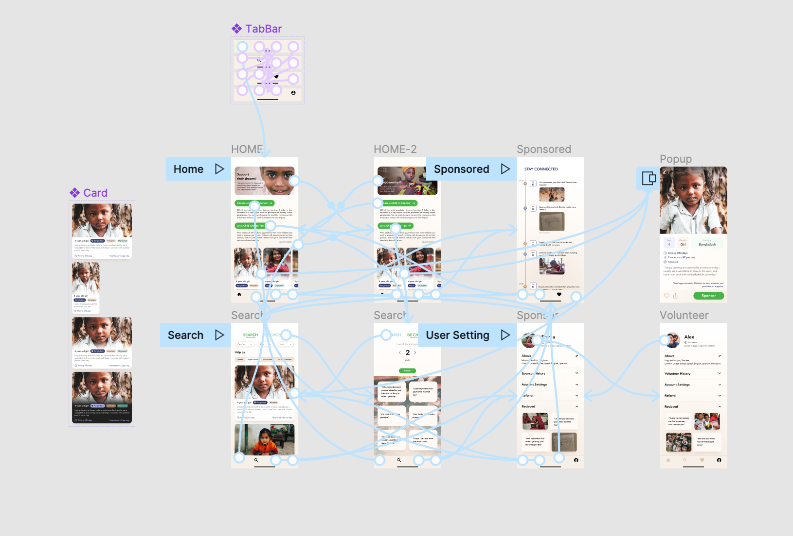

WINNER
Best Interdisciplinary Hack sponsored by the College of L&S
WINNER
Best Social Impact Hack sponsored by CITRIS
Role:
UX Researcher & Designer, worked with Caroline Yau.
Duration:
24 Hours
Date:
Apr 16 - 17, 2022
Empathy-focused design that fosters an emotional connection between sponsors and the children in need of financial support.
Interactive sponsorship system that allows sponsors to choose the number of children they wish to support and enables children to select their own sponsor.
Personalized progress update system that keeps sponsors informed about the children's recent progress, ensuring that the kindness is passed on.
We built Dream Sponsor by Figma, designed a prototype of such a platform that can help connect children and sponsors and make the whole sponsorship process transparent.
